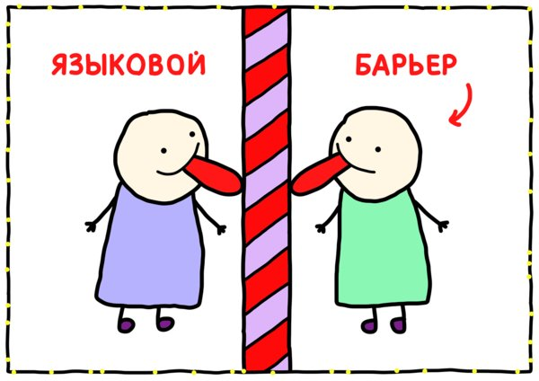
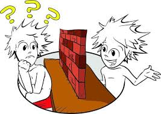
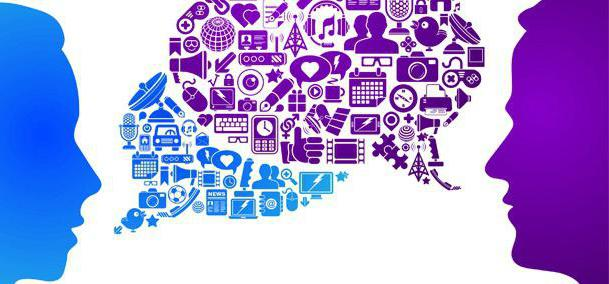
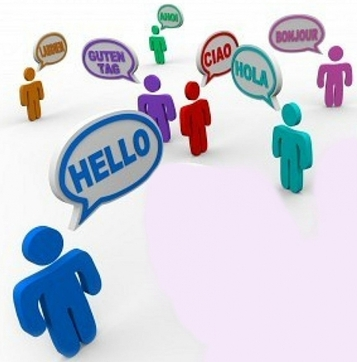

В последнее время внимание специалистов привлекает проблема трудностей
межличностного общения. Каждый день проходит в тесном контакте людей между собой. Мы ходим

на работу, на учебу, общаемся дома. И в каждой из этих сфер мы общаемся друг с другом.
На работе – с начальством и коллегами, в школе – с преподавателями и одноклассниками,
дома – с родными и близкими.
Именно отсюда вытекает актуальность изучения барьеров, возникающих при общении. Ведь в случае возникновения такого барьера информация теряет изначальный смысл, искажается или же вообще не доходит до нас. Именно из-за этих барьеров мы отдаляемся друг от друга, перестаем понимать собеседника, доверять. Возникают конфликты, в результате снижается эффективность процесса общения.
Проблема исследования: нас интересуют причины возникновения барьеров в общении и поиск способов преодоления трудностей коммуникации.
Объект исследования: смысловые (семантические) барьеры в общении.
Предмет исследования: пути преодоления смысловых (семантических) барьеров в общении.
Цель исследования: изучить понятие коммуникативных барьеров межличностного общения, проанализировать причины появления семантических барьеров, выявить пути преодоления семантических барьеров в общении.
Гипотеза:смысловой (семантический) барьер – причина неэффективности коммуникации, значит, заинтересованный в результативном общении человек способен найти путь решения проблемы.
Задачи:изучить специальную литературу; провести анкетирование; проанализировать результаты анкетирования и собранные материалы; разработать и провести классный час; сделать выводы.
Любой человек формируется в определенной социальной и культурной среде. Соответственно, важнейшей его деятельностью является коммуникация. Одна из ключевых её проблем – адекватное восприятие передаваемой информации и, следовательно, результативность коммуникации. Так или иначе, с проблемами коммуникации сталкиваются практически все. Поэтому, для того чтобы достичь успеха в жизни, нам необходимо хорошо разбираться в том, какими бывают барьеры  общения и каковы способы их преодоления. Сейчас проблемы исследования коммуникативных процессов входят в число наиболее актуальных проблем для человечества.
Барьеры общения – это психологические трудности, возникающие в процессе общения, служащие причиной конфликтов или препятствующие взаимопониманию и взаимоде йствию. Под барьерами общения подразумевают те многочисленные факторы, которые служат причиной конфликтов или способствуют им . Данные причины могут осознаваться или не осознаваться общающимися людьми. От этого во многом зависит то, насколько быстро эти люди заметят, что у них есть проблемы, поймут, какого они рода и наконец-то смогут их решить.
Каковы же основные виды барьеров в общении? Выделяется несколько подгрупп:
Более подробно мы рассмотрим подгруппу коммуникативных б арьеров – барьеров понимания, в частности, семантический барьер, который представляет для нас наибольший интересс точки зрения поиска путей преодоления барьеров общения
Лингвистические,или коммуникативные, барьеры возникают из-за языковых различий: люди могут общаться на разных языках; они могут говорить на одном языке, но не понимать друг друга из-за различий лексиконов – богатых у одних и ограниченных у других, из-за несовпадения тезаурусов – лингвистического смыслового наполнения произносимых слов.
\Коммуникативные барьеры возникают на межличностном уровне. Они зависят от индивидуальных особенностей участников коммуникации, от умения собеседников перекодировать мысли в слова, слушать и концентрировать внимание.
В связи с этим выделяют такие барьеры, как: граница воображения, словарный запас отправителя информации, словарный запас получа теля, его способность понимать значение слов, объем запоминания.
Семантический барьер встает на пути тогда, когда собес едники под одними и теми же понятиями подразумевают совершенно разные вещи. Это, во-первых, несовпадение тезаурусов, то есть лингвистического словаря языка с полной смысловой информацией, ограниченный лексикон у одного из партнеров и  богатый – у другого, во-вторых, социальные, культурные, психологические, национальные, религиозные и другие различия. Такой барьер возникает практически всегда и везде, т.к. мы по-разному понимаем многие вещи. Когда партнер понял совсем не то, что ему сказали, или то, но не в том смысле, тогда можно зафиксировать семантический барьер, который и приводит к неэффективной коммуникации.
Среди причин появления этого барьера можно выделить:
Специалисты утверждают, что бороться с психологическими барьерами труднее всего, иногда даже невозможно. Оставим эту работу психологам. Но мы уверены, что бороться с коммуникативными барьерами не только можно, но и абсолютно необходимо,  особенно когда мы говорим о людях, разговаривающих на одном языке.
Наши типичные ошибки:
Для того чтобы выяснить, сталкивались ли ученики с бар ьерами общения и как преодолевали их, было проведено анкетирование среди уч ащихся 6-х и 10-х классов.
Анкета содержала следующие вопросы:
В результате данного опроса я выявила следующее:
Также я решила спросить у ребят, что такое «справедливость», ведь даже под одним, казалось бы, понятным словом, разные люди могут под разумевать совершенно разные понятия. Большинство учеников считают, что справедливость – это когда в итоге все равны и каждый получает то, что заслужил, но некото рые подразумевают под этим словом правильный выход из какой-либо ситуации. А вот определение из словаря Ушакова: «Беспристрастие, справедливое отношение к кому-чему-нибудь. Соблюсти справедливость. Нарушить справедливость. Чувство справедливости» .
Таким образом, я узнала, что ученики 10 школы делают для того, чтобы справиться с трудностями в общении, и доказала, что семантические барьеры могут быть причиной неэффективной коммуникации.
Для более точного подтверждения своей гипотезы я провела классный час для учеников 10 класса (см. Приложение). Целью было проанализировать при чины появления барьеров в общении и выявить пути их преодоления. Сначала я рассказала ребятам о том, что такое барьеры в общении, подробнее мы разобрали семантические. Для этого я предложила ребятам проанализировать отрывки из литературных произведений и определить, какие барьеры привели к конфликтам между героями. Я выбрала для анализа отрывки из романа И. С. Тургенева «Отцы и дети», повести М. А. Булгакова «Собачье сердце» и книги шведского писателя Ф. Бакмана «Вторая жизнь Уве». Ребята сделали следующие выводы:
Затем мы обсудили способы преодоления таких барьеров и выявили несколько «золотых» правил. Общаясь с людьми, мы должны:
Цель моей работы была изучить понятие коммуникативных барьеров межличностного общения, проанализировать причины появления семантических барьеров и выявить пути преодоления семантических барьеров в общении. Выполнив все задачи, я доказала, что смысловой (семантический) барьер – причина неэффективности коммуникации, а, значит, заинтересованный в результативном общении человек способен найти путь решения проблемы.
Жизнь сталкивает нас с разными людьми. И очень редко дарит тех, в общении с которыми барьеры не возникают. По этой причине следует быть снисходительными к проявлениям некоммуникабельности и уметь делать общение бесконфликтным. Чтобы преодолеть барьеры в общении, нужно поставить «диагноз» себе или партнеру и так построить свое поведение, чтобы уменьшить или устранить барьер.